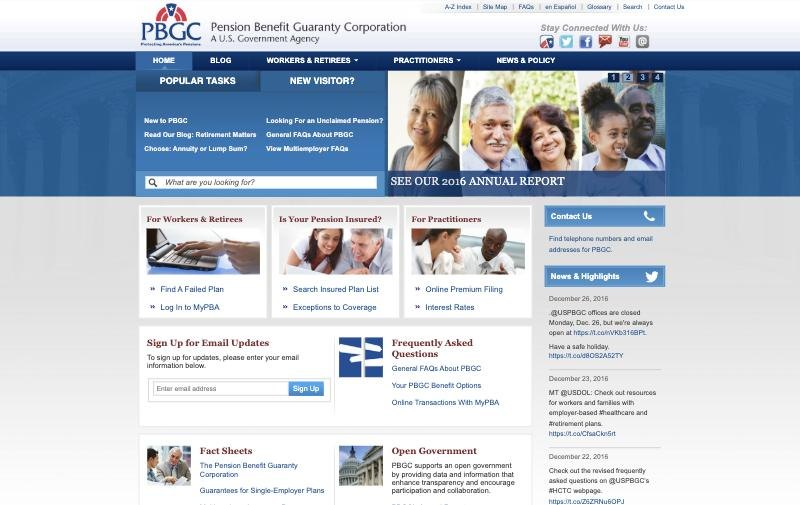
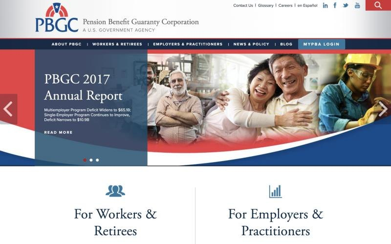

PBGC.gov
Front-end development for a website people depended on
I maintained PBGC.gov during its transition from Ingeniux to Drupal, then helped support the new site. It was my first web development role and where I learned how to work on a production website, review changes with a team, and build for people who needed clear, accessible information about their pensions.
How I got there
After seven years in corporate communications and investor relations at The Washington Post Company, my role ended following the newspaper’s sale. A colleague suggested I learn HTML, CSS, and JavaScript. I took a class during my severance period, and my next job was as a developer.
New Target hired me to work on PBGC.gov, the website of the Pension Benefit Guaranty Corporation. People came to the site for information about their pensions, including what would happen to their benefits when a pension plan ended. Some were navigating an unfamiliar process at an already stressful time. Finding the right information mattered.
Keeping the site running through a redesign
My initial responsibility was maintaining the existing site in Ingeniux while a separate team built its replacement in Drupal. I fixed front-end bugs, addressed performance issues, and kept the existing site working during the transition.
After the new site was delivered, we supported both versions for a period before launch. That required careful coordination across a small team: knowing which version needed a change, checking the implementation, and reviewing it before it went live.
PBGC launched the redesigned website in May 2017. Its public announcement highlighted improved search, simpler navigation, and a consistent experience across desktop and mobile devices. Those were team-level improvements; my role was front-end maintenance and implementation during the transition.
Before and after


What I learned
This was where I learned the practice of web development, not just the syntax.
I worked with Section 508 accessibility requirements and a code review process in which multiple people checked changes before they went live. I learned from a senior developer whose experience included decades at NASA, and I learned how to ask useful questions and contribute as the most junior person on the team.
I also started attending Drupal meetups and conferences. The work and the DC Drupal community gave me a technical foundation I later relied on during nearly seven years at Green America.
The lesson that stayed with me was simpler: a website can be technically functional and still leave someone unable to do what they came to do. On PBGC.gov, that person might be trying to understand what would happen to their retirement income. That made accessibility, navigation, and clear information feel concrete rather than abstract.
It’s a question I still bring to product work: does this actually work for the person who needs it?